Browse the guide
Start hereAll 12 casesDescribe molecular views
Figure 1B1Pocket visibilityFigure 1B5Local to global contextFigure 1B6Preserve an alternate AP5 interaction viewCheck contacts and distances
Figure 1B2Contacts across viewsFigure 4ADocument conserved pocket-water selectionFigure 4CCheck short ligand contactsFigure 4DRecord an Asp110-ligand distanceCompare models and ensembles
Figure 1B3Confidence and geometryFigure 1B4AP5 conformational clustersFigure 4BCompare ranked ligand posesReview trajectories
Figure 4ETrace interaction state changesFigure 4FCompare trajectory repeatsShare and continue
Open a review packageDocument conserved pocket-water selection
Explain which waters remain visible in the retained-water view and record the selection rules.
Extract the input ZIP first. The files folder contains the 14 files to select in ClaimTrace; LAB_NOTES.txt contains the example observations.
View the 14 input files
- 3UQX.pdb
- alignment_metadata.csv
- bace1_selected_structures.csv
- case01_real_a1_all_waters.pml
- case01_real_a1_all_waters.png
- case01_real_a1_all_waters.pse
- case01_real_a2_retained_waters.pml
- case01_real_a2_retained_waters.png
- case01_real_a2_retained_waters.pse
- case01_real_a3_waters_removed.pml
- case01_real_a3_waters_removed.png
- case01_real_a3_waters_removed.pse
- water_evidence_summary.json
- water_evidence_table.csv
- 1. Create the package
- 2. Write the figure statement
- 3. Choose the evidence and its sources
- 4. Record the settings
- 5. Describe the saved view
- 6. Explain the color key
- 7. State the interpretation limit
- 8. Read the short audit
- 9. Prepare the working draft
- 10. Download the package
Create the package
Extract the input ZIP and read LAB_NOTES.txt beside the files/ folder. In ClaimTrace, click Choose files on the welcome page, or Start with files in an open package. Select all 14 files inside files/. Enter the package name below and click Create package.
| Package name | Figure 4A - Selecting conserved pocket waters |
|---|
Check: The package opens with 14 files.
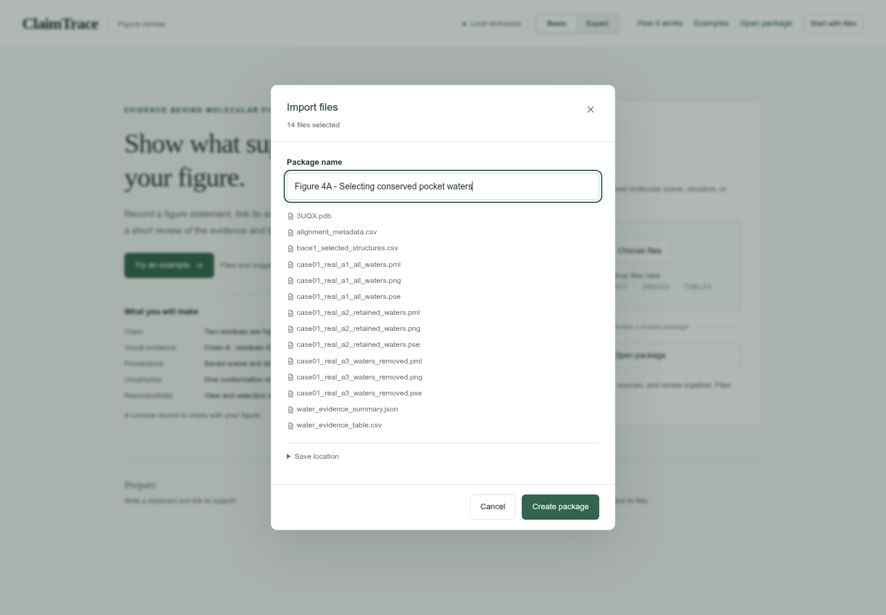
Write the figure statement
Click Add claim. Use Edit claim when updating a saved statement. Enter the statement and figure label. Under Linked scenes, select case01_real_a2_retained_waters.pml and clear the other scenes. Click Save claim.
| Figure statement | The retained-water view preserves eight selected waters around the 3UQX ligand, including six bridge proxies. |
|---|---|
| Figure label | Figure 4A |
| Statement type | Structure view |
| Linked scenes | case01_real_a2_retained_waters.pml |
Check: The statement appears in the Claims sidebar.
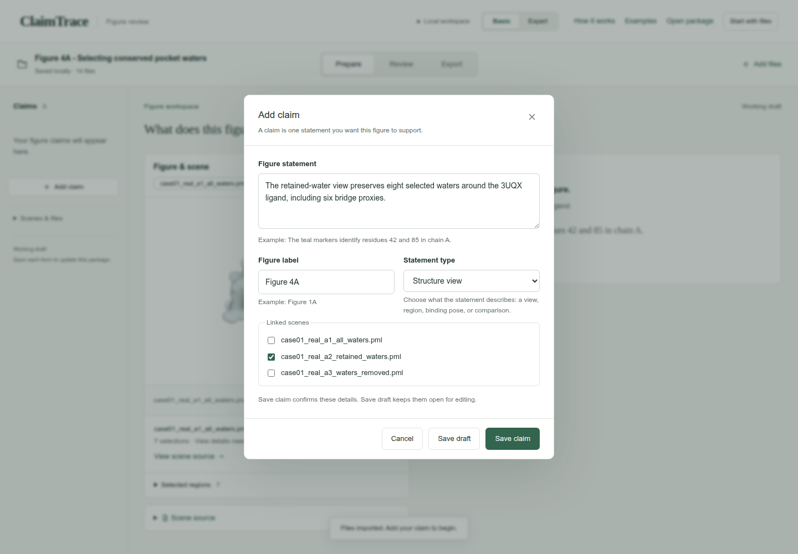
Choose the evidence and its sources
Click Add evidence. Choose the evidence type and select the Source files listed below. Scroll within the file list to find each source. Enter the method and observation.
| Evidence type | Contact table |
|---|---|
| Source files | 3UQX.pdb
alignment_metadata.csv
bace1_selected_structures.csv
water_evidence_summary.json
water_evidence_table.csv |
| How was it checked? | Compare the three saved water views with the supplied water-selection table. |
| What did you find? | The 3UQX rows contain 14 nearby waters, eight retained waters and six bridge proxies. Across 20 structures, the supplied table contains 283 water records, 114 clusters and 132 retained records. |
Check: 5 source files are selected.
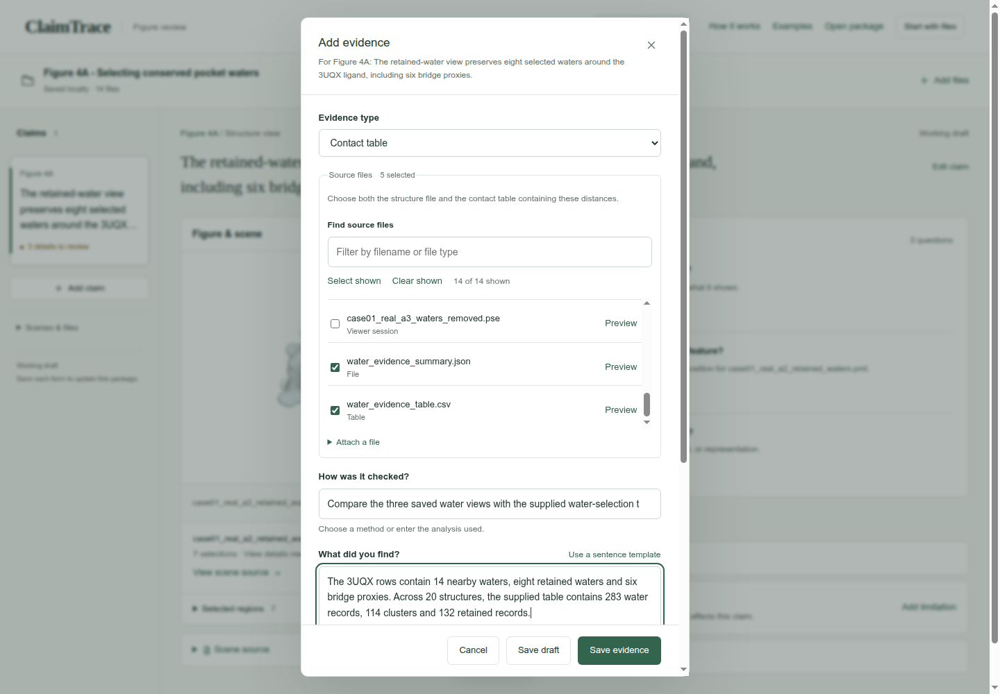
Record the settings
Enter the 4 angstrom water-neighborhood cutoff. Expand Analysis settings and record the separate cluster, conservation and bridge-proxy thresholds. Click Save evidence.
| Contact distance cutoff | 4 |
|---|---|
| Distance unit | angstrom |
| Selections, cutoffs and sampling | Reference: 3UQX, chain A ligand ZPZ401. Water neighborhood: 4 angstrom; cluster radius: 1.2 angstrom; conservation fraction: at least 0.3; bridge proxy: each water-to-partner distance within 3.5 angstrom. Ensemble: 20 structures. |
Check: The page confirms Evidence saved, and Evidence & sources shows 1 record.
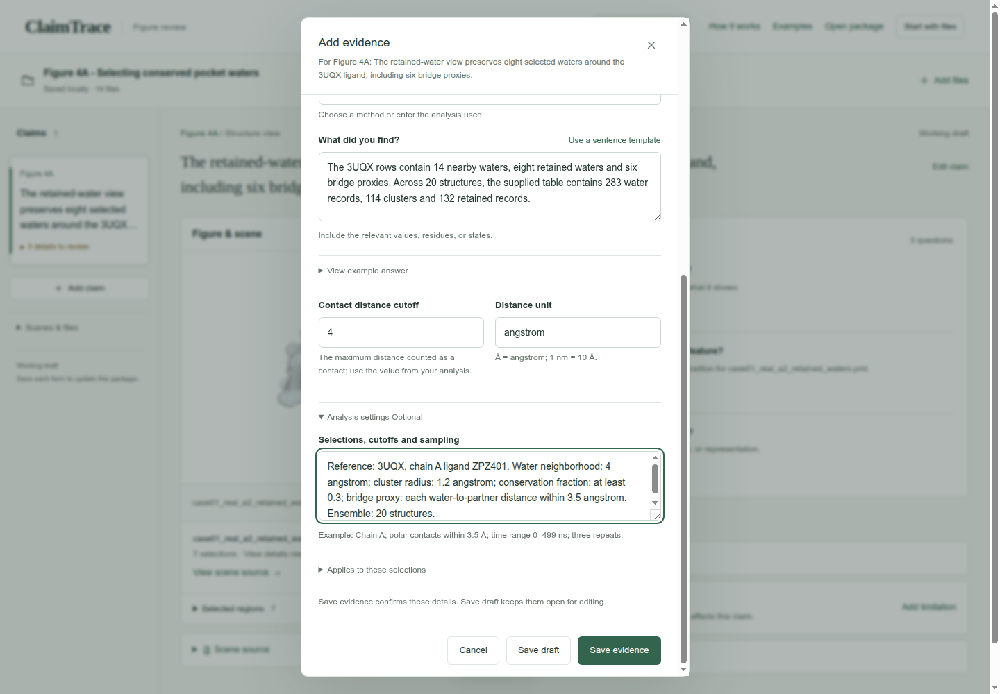
Describe the saved view
Click Edit view details in Details to complete. Enter the saved-view context and the visibility explanations from the scene script. Click Save details.
| Saved view or camera context | Open case01_real_a2_retained_waters.pse. The script orients ligand or pocket, turns y by -15 and x by 8, zooms by 4.8 and clips a slab of 35. |
|---|---|
| Why is not (polymer.protein or (resn ZPZ and chain A and resi 401) or resn HOH) excluded? | Only protein, ZPZ in chain A residue 401, and water molecules remain in this scene. |
| Why is all hidden? | The initial hide command clears representations before the script selectively shows the pocket, ligand and retained waters. |
| Why is pocket and elem H hidden? | Pocket hydrogen sticks are hidden; heavy-atom representations remain. |
| Why is bridge_proxy_* hidden? | Bridge proxy labels are hidden; distance guide lines remain. |
Check: View recorded appears beside the scene.
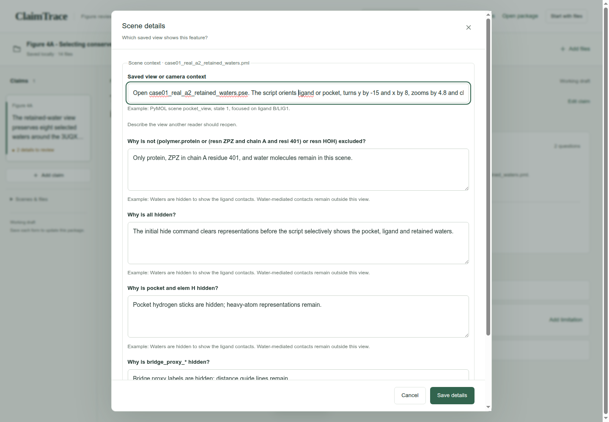
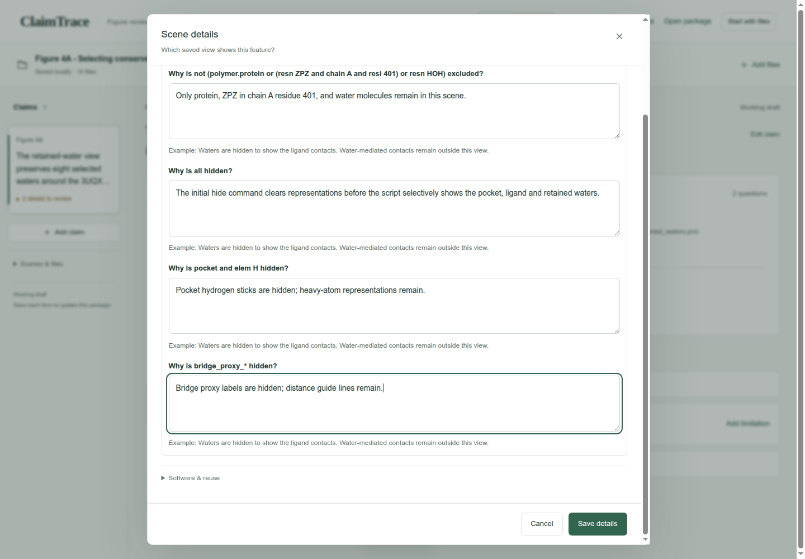
Explain the color key
Click Explain visual meaning. For each saved color instruction, choose Identify this molecule or region, then enter its color key. Scroll through the entries and click Save color key.
| What is this color used for? — each entry | Identify this molecule or region |
|---|---|
| Color key — protein_gray · context | Light gray identifies the surrounding protein context. |
| Color key — protein_surface_gray · pocket_surface | Pale gray identifies the pocket surface. |
| Color key — pocket_gray · pocket and elem C | Gray identifies carbon atoms in the pocket. |
| Color key — ligand_carbon · (ligand) and elem C | Teal identifies ligand carbon atoms. |
| Color key — oxygen_red · (ligand) and elem O | Red identifies ligand oxygen atoms. |
| Color key — nitrogen_blue · (ligand) and elem N | Blue identifies ligand nitrogen atoms. |
| Color key — sulfur_yellow · (ligand) and elem S | Yellow identifies ligand sulfur atoms. |
| Color key — chlorine_green · (ligand) and elem CL | Green identifies ligand chlorine atoms. |
| Color key — retained_green · retained_waters | Green identifies retained water molecules. Larger green spheres mark the six bridge proxies. |
| Color key — retained_green · bridge_proxy_* | Green distance guides connect the displayed protein-water-ligand bridge proxies. |
Check: The visual-key question clears from Details to complete.
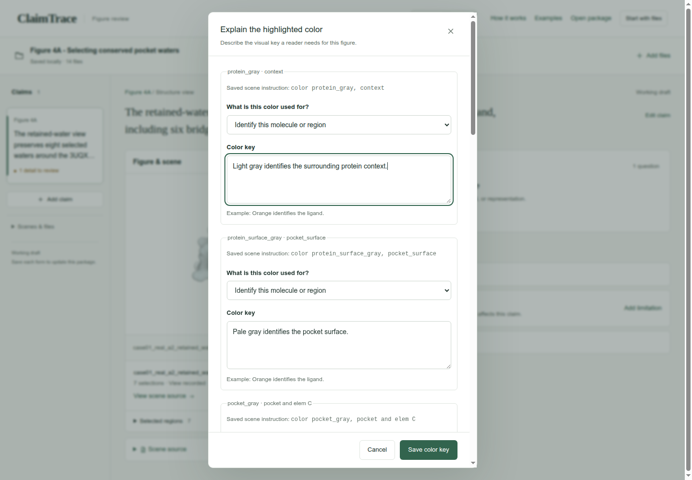
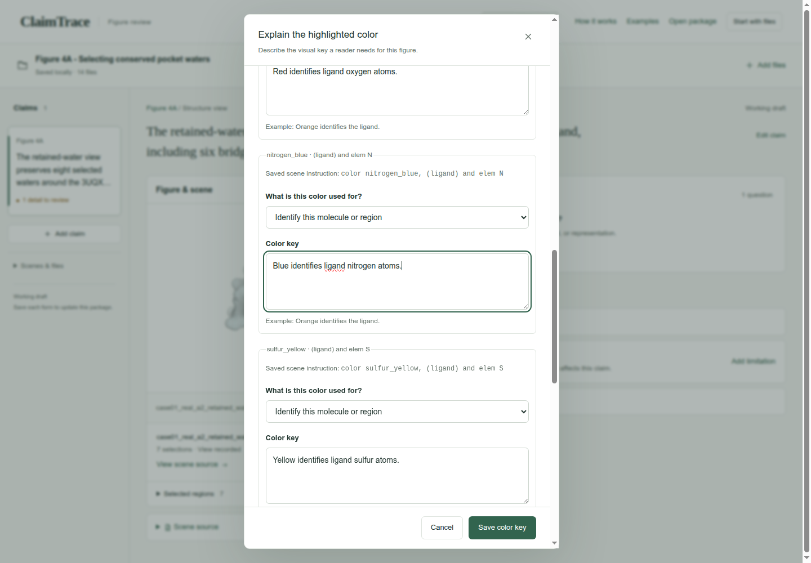
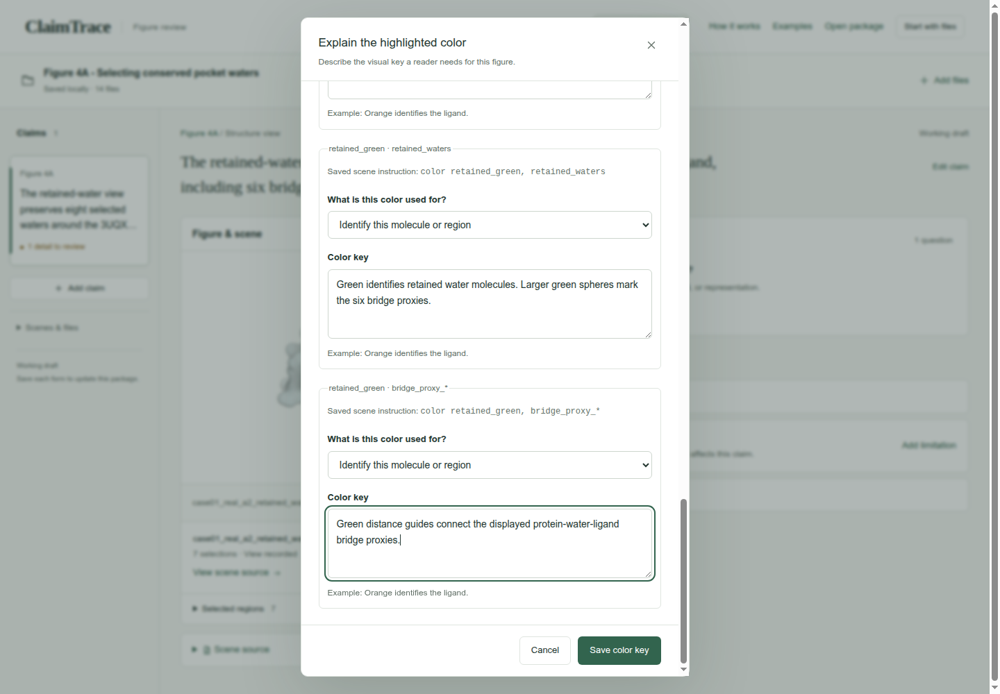
State the interpretation limit
Click Add limitation. Keep Write your own selected, enter the limitation, then click Save limitation.
| What limits this conclusion? | Bridge proxies use heavy-atom distances. Full ensemble realignment requires the other source structures. The supplied reference coordinates and three scenes support comparison of retained and hidden water context. |
|---|
Check: The saved limitation appears with the claim.
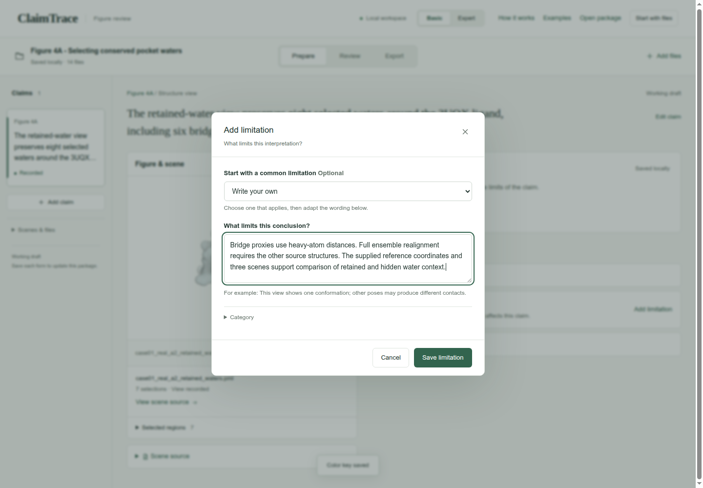
Read the short audit
Click Review. Read Claim, Visual evidence, Provenance, Uncertainty and Reproducibility. Click a row whenever you want to inspect its linked details.
Check: The audit shows the statement, source-linked finding, recorded limitation and current reproducibility status.
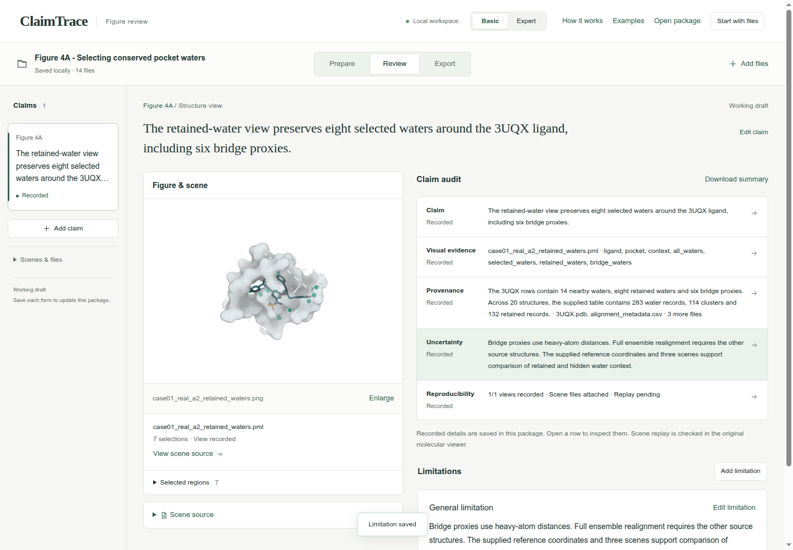
Prepare the working draft
Click Export, then Working draft. Read the package-check result.
| Purpose | Working draft |
|---|
Check: The page shows Draft checks passed.
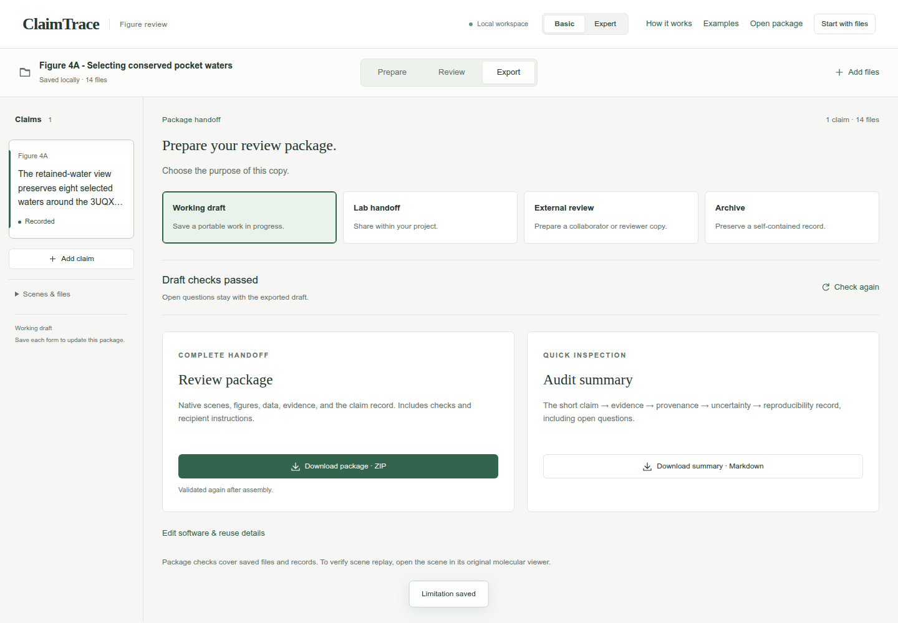
Download the package
Click Download package · ZIP. Check your browser’s downloads for claimtrace-review.zip, then save it with your figure. The ZIP contains the source files, claim record and recipient instructions.
Check: The page confirms: Export checks passed. Your browser will download the package.
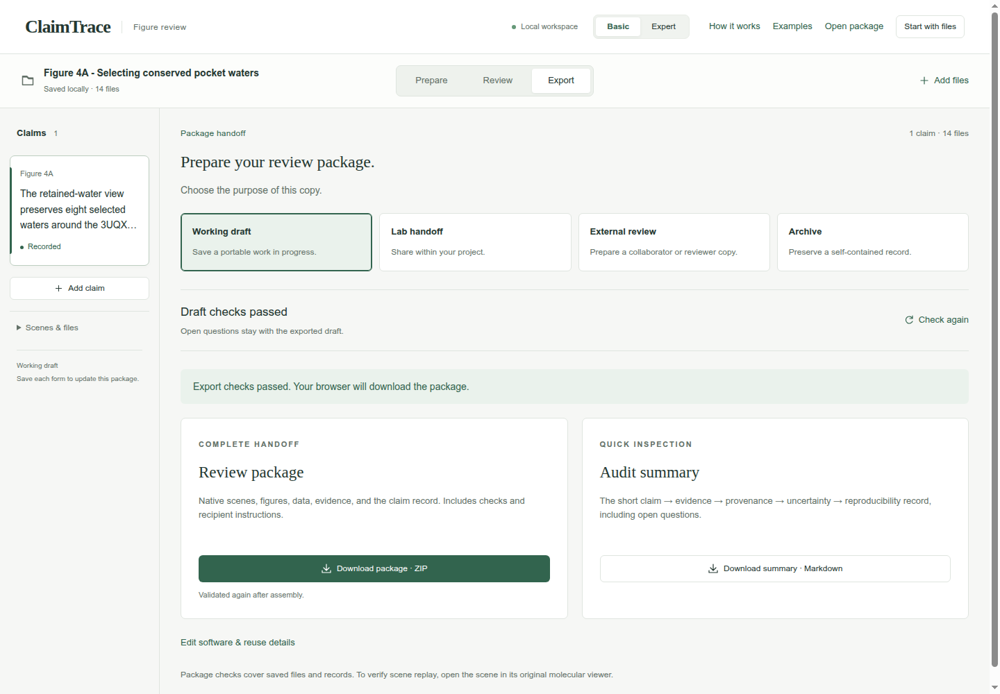
Your saved result
A downloaded Working draft ZIP with one claim, 14 input files, one evidence record and one limitation. The GUI confirms export checks passed.